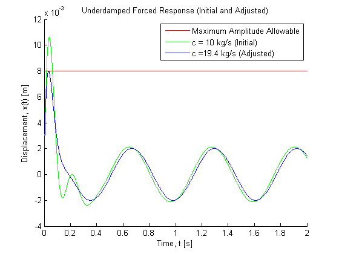

Contents
% Joel Lubinitsky % MAE 321 - HW9.4 % 03/25/15 clear all close all clc
Problem 4:
A DVD drive is mounted on a chassis and is modeled as a single-degree-of-freedom spring, mass, and damper. During normal operation, the drive (having a mass of 0.4 kg) is subject to a harmonic force of 1 N at 10 rad/s. Because of material considerations and static deflection, the stiffness is fixed at 500 N/m and the natural damping in the system is 10 kg/s. The DVD player starts and stops during its normal operation providing initial conditions to the module of = 0.001 m and = 0.5 m/s. The DVD drive must not have an amplitude of vibration larger then 0.008 m even during the transient stage. First, compute the response by numerical simulation to see if the constraint is satisfied. If the constraint is not satisfied, find the smallest value of damping that will keep the deflection less than 0.008 m.
Find: Response, smallest c
Known

mass = 0.4; funForcing = @(t) cos(10 .* t); stiffness = 500; coefficientDamping = 10; xInitial = 0.001; vInitial = 0.5; xMax = 0.008;
Calculations
Rewrite as system of first order ODEs:
Apply RK4:
% Initialize System T = 2; dt = 0.001; N = T / dt; times = linspace(0, T, N); vx = zeros(N, 2); vx(1, 2) = xInitial; vx(1, 1) = vInitial; % Run RK4 Integrator for n = [1 : N - 1] % n step through time time = (n - 1) * dt; vx(n + 1, :) = RK4SpringMassDamperForced(vx(n, 1), vx(n, 2), mass, ... coefficientDamping, stiffness, dt, funForcing, time); end % n xMaxTest = max(vx(:, 2)) % Initialize New System vxNew = zeros(N, 2); vxNew(1, 2) = xInitial; vxNew(1, 1) = vInitial; coefficientDampingNew = [19 : 0.1 : 21]; % Run RK4 Integrator for New C Values for c = coefficientDampingNew % c step through damping coefficients for n = [1 : N - 1] % n step through time time = (n - 1) * dt; vxNew(n + 1, :) = RK4SpringMassDamperForced(vxNew(n, 1), vxNew(n, 2), mass, ... c, stiffness, dt, funForcing, time); end % n if max(vxNew(:, 2)) < xMax coefficientDampingSelected = c; break end % if end % c strSelected = strcat('c = ', num2str(coefficientDampingSelected), ' kg/s (Adjusted)');
xMaxTest =
0.0106
Plots
figure(1) hold on title('Underdamped Forced Response (Initial and Adjusted)') xlabel('Time, t [s]') ylabel('Displacement, x(t) [m]') plot(times, repmat(xMax, 1, length(times)), 'color', [1 0 0]) plot(times, vx(:, 2), 'color', [0 1 0]) plot(times, vxNew(:, 2), 'color', [0 0 1]) legend('Maximum Amplitude Allowable', 'c = 10 kg/s (Initial)', strSelected)
Results
The original damping coefficient, c = 10 kg/s does not satisfy the system's constraints. Integrating through the response with a time step, dt = 0.001, and iterating through damping coefficients with a resolution of 0.1 kg/s, the minimum allowable damping coefficient is found to be c = 19.4 kg/s.